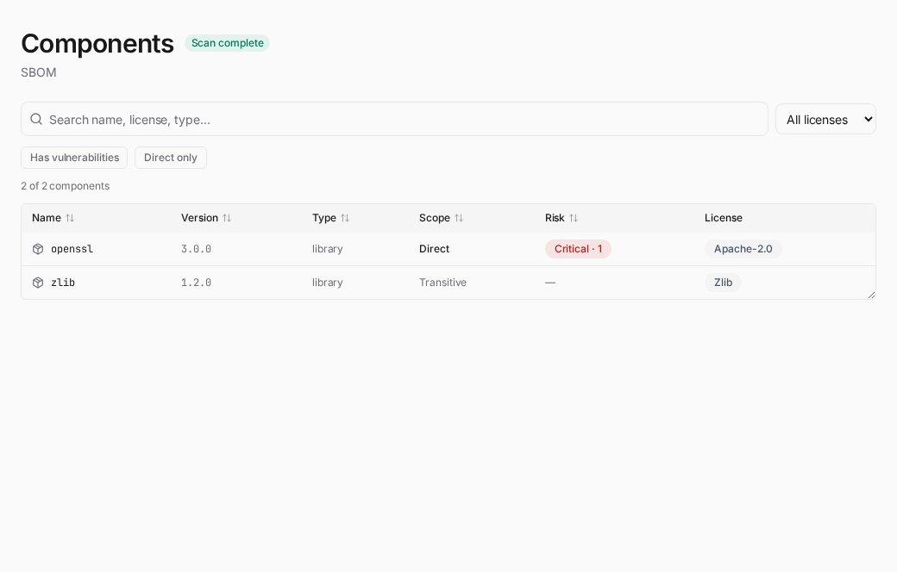
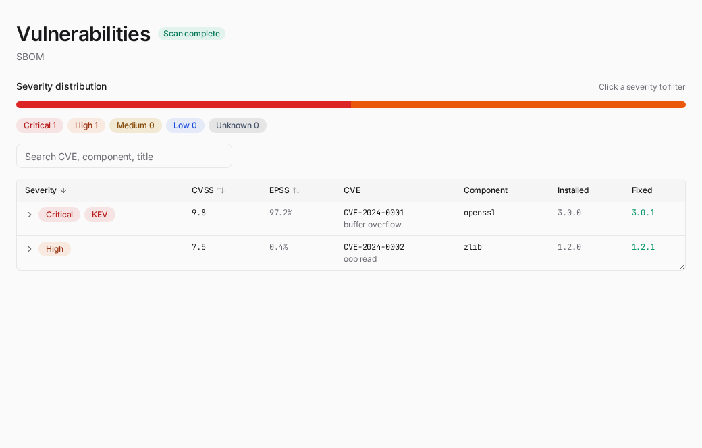
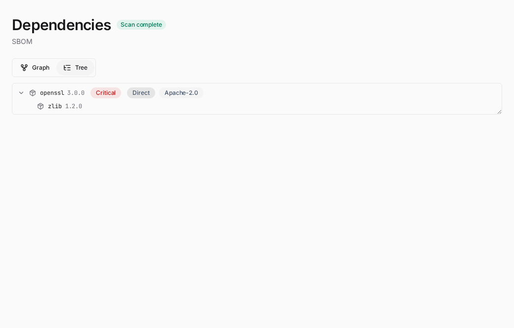
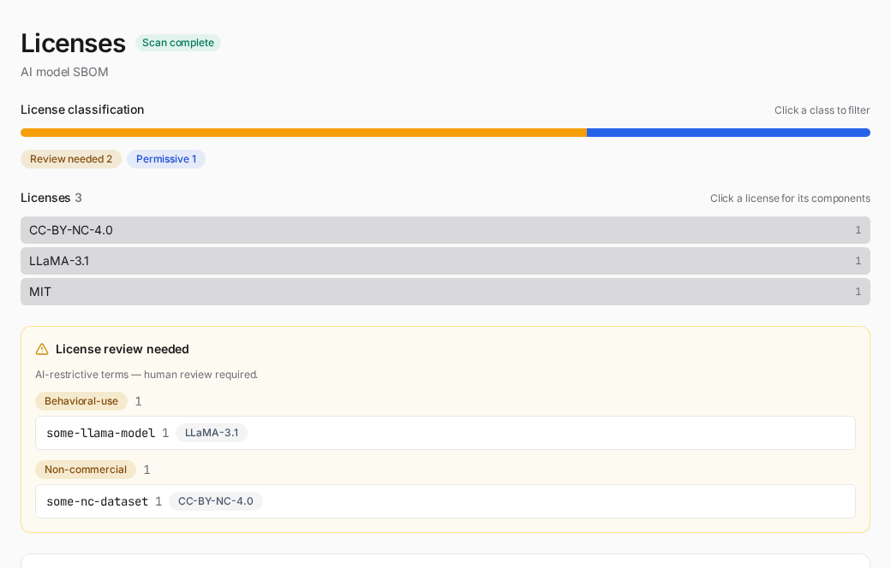
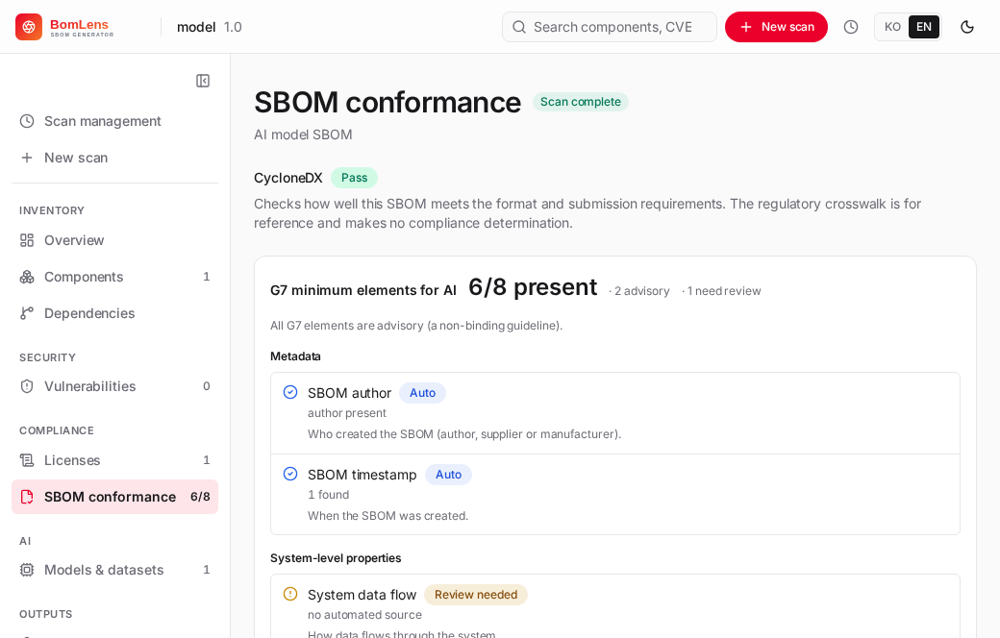
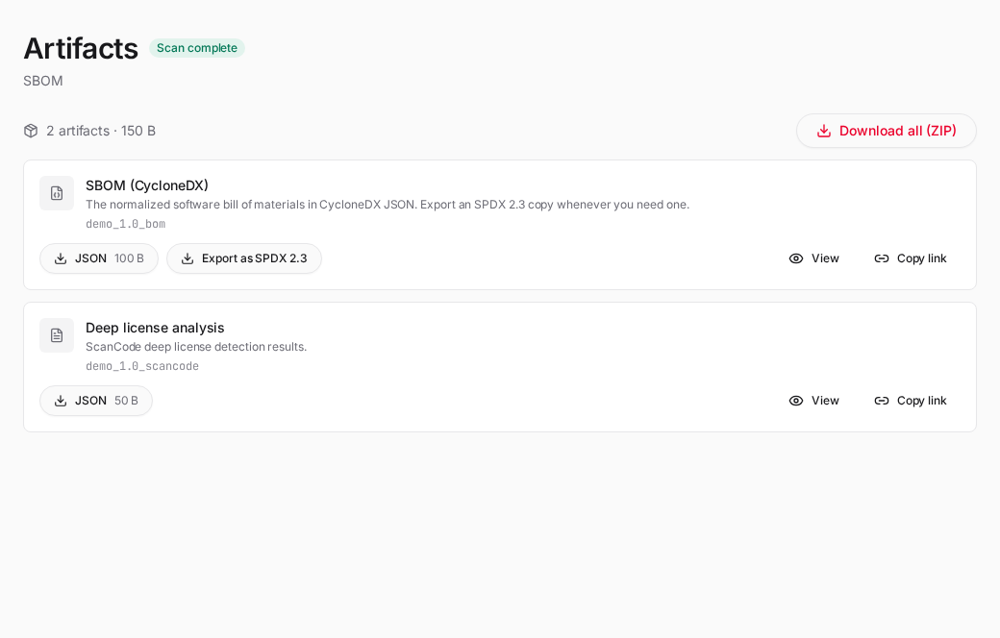
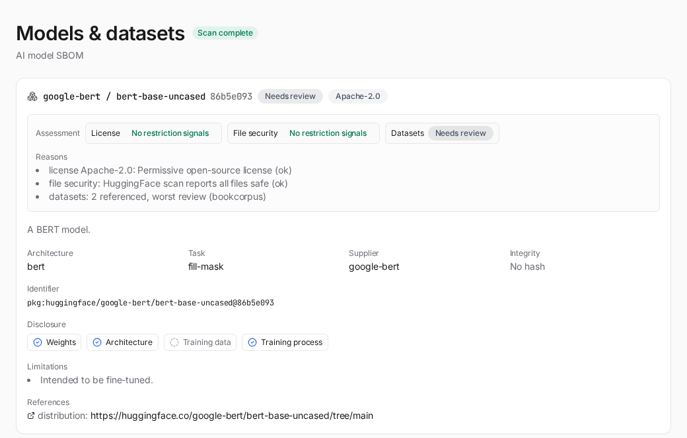

웹 UI와 데스크톱 앱¶
CLI 없이 브라우저에서 스캔합니다. UI 서버가 스캐너 이미지에 내장되어 있어 별도 설치가 필요 없습니다.

macOS / Linux:
cd ~/sbom-output # 출력 폴더(아무 곳이나 가능)
/path/to/bomlens/scripts/scan-sbom.sh --ui
# → http://localhost:8080 자동 열림
Windows — 더블클릭(명령줄 없이): 압축을 푼 폴더에서 scripts\sbom-ui.bat을 더블클릭하면 잠시 후 브라우저가 http://localhost:8080을 엽니다. Docker만 실행 중이면 되고, sbom-ui.bat은 Rancher Desktop이나 Docker Desktop에서 동작합니다(WSL2에서는 WSL 안에서 scan-sbom.sh --ui를 실행하세요).
실행 위치는 출력 베이스이며, 스캔 대상으로 "현재 폴더"를 고를 때만 그 폴더의 소스를 스캔합니다. GitHub URL, 업로드, Docker 이미지를 쓰면 실행 위치는 무관합니다. 스캔마다
{Project}_{Version}/하위 폴더에 저장되며, 기본 베이스와 바꾸는 방법은 산출물 위치를 참고하세요.
셸 구성¶
인터페이스는 폭 전체를 가로지르는 상단 바, 현재 스캔의 섹션을 담는 좌측 레일, 내용 영역으로 이뤄집니다.
- 상단 바 — 제품 표시(클릭하면 홈으로), 현재 프로젝트, 재스캔 버튼(설정이 그대로 남아 있는 스캔에서만 나타나며, 같은 대상을 토글을 채운 채 다시 실행합니다), 컴포넌트와 CVE를 아우르는 통합 검색, 스캔 관리 메뉴(시계 아이콘을 누르면 지난 스캔 목록과 삭제 버튼, 전체 목록 링크가 열립니다), 새 스캔 버튼, 언어(KO / EN / TW)와 라이트·다크 전환.
- 좌측 레일 — 맨 위에 스캔을 벗어나는 링크 두 개(스캔 관리, 새 스캔)가 있고, 그 아래에 현재 스캔의 섹션이 인벤토리, 보안, 컴플라이언스, AI, 산출물로 묶여 있습니다. 레일은 스캔에 맞춰 바뀝니다. AI 섹션은 AI/ML SBOM에만 나타나고, 각 섹션은 해당 데이터가 있을 때만 보입니다. 화면 폭이 좁으면 아이콘만 남게 접힙니다. 스캔이 열려 있지 않은 홈 화면에는 레일이 없습니다.
- 내용 영역 — 홈(스캔 관리) 화면, 새 스캔 폼, 진행 화면, 또는 선택한 결과 섹션.
전역 작업(새 스캔, 스캔 관리)은 상단 바에 있고, 레일도 섹션 위에 같은 두 항목을 이름이 붙은 링크로 되풀이해 결과 화면에서 돌아갈 길이 늘 글자로 보이게 합니다. 로고, 새 스캔, 레일 섹션, 바로가기 카드, 지난 스캔 링크 같은 모든 내비게이션 요소는 URL 해시(#/scan/<id>/<section>)가 붙은 실제 링크라, Cmd/Ctrl 클릭이나 가운데 클릭으로 새 탭에서 열 수 있습니다.
새 스캔¶
새 스캔 화면은 두 칸으로 나뉩니다. 왼쪽에서 소스를 고릅니다. 코드(현재 폴더, 디렉터리 경로, GitHub URL, ZIP 업로드), 아티팩트(Docker 이미지, 패키지 또는 빌드 산출물, 펌웨어 이미지), SBOM(기존 SBOM 분석), AI 모델(HuggingFace 모델로 ML-BOM 생성, 또는 모델 파일 업로드)로 묶여 있고, 타일 아래에 소스별 입력란이 나타납니다. 오른쪽에서 프로젝트 이름과 버전을 입력하고 생성할 산출물을 고른 뒤 스캔을 시작합니다.
| 스캔 대상 | 입력 방식 | 백엔드 모드 |
|---|---|---|
| 현재 폴더 | UI 실행 폴더의 소스를 스캔 | SOURCE |
| 디렉터리 경로 | 실행 폴더 하위 폴더(예: OS rootfs), --ui --mount <dir>로 마운트한 폴더, 데스크톱 앱에서는 "폴더 추가" 버튼으로 고른 폴더 |
ROOTFS, Yocto 빌드 디렉터리면 ANALYZE |
| GitHub URL | 저장소 URL 입력 | SOURCE (clone) |
| ZIP 업로드 | .zip/tar 파일 업로드 |
SOURCE (extract) |
| 패키지 업로드 | 빌드 산출물 업로드 — .jar, .war, .ear, .deb, .rpm, .whl |
BINARY (whl은 압축을 풀어 ROOTFS로 스캔) |
| SBOM 업로드 | 기존 SBOM(JSON, 또는 Yocto SPDX 2.2 빌드가 만드는 .spdx.tar.zst) 업로드 |
ANALYZE |
| 펌웨어 업로드 | .bin 등 업로드 |
FIRMWARE |
| Docker 이미지 | 이미지 이름 입력 | IMAGE |
| AI 모델 | HuggingFace 모델 id(org/model) 입력 |
AIBOM |
| 모델 파일 | .gguf, .safetensors, .pt 등 업로드(최대 8GB) |
MODELFILE |
| 공개 데이터셋 | 모델 ID와 같은 칸에 Figshare 항목의 페이지 주소나 DOI, 항목 번호 입력 | DATASET |
생성 옵션은 오픈소스 고지문과 보안(취약점) 보고서입니다. 스캔은 언제나 CycloneDX로 SBOM을 만들고 SPDX 사본은 스캔이 끝난 뒤 결과 화면에서 내보내므로, 여기서 미리 정할 것은 없습니다. 이와 별도로 고급 스캔 옵션 섹션은 어떤 파일을 만들지가 아니라 소스를 어떻게 분석할지를 바꾸는 토글을 모읍니다. 프로젝트 자체 소스 파일을 훑어 파일 단위 라이선스 텍스트(1st-party)를 찾는 라이선스 스캔(ScanCode, 선언된 의존성을 내려받지는 않습니다)과 소스 트리에 복사된 제3자 오픈소스(주로 C/C++)를 찾는 파일 단위 식별(SCANOSS)이 소스 코드 스캔(현재 폴더, GitHub URL, ZIP 업로드)에 해당하고, 펌웨어에는 OSV 권고가 들어갑니다. SCANOSS는 무료 OSSKB 서비스를 쓰는데 호출 한도가 있어 자주 실행하면 결과가 비어 올 수 있으니, 정기적으로 쓴다면 scanoss.com에서 토큰을 발급해 넣으세요. Docker 이미지·SBOM 업로드·AI 모델에는 고급 옵션이 없습니다. SBOM 업로드(ANALYZE)를 고르면 위험분석을 위해 고지문과 보안 보고서가 강제로 켜지고, AI 모델 스캔은 고지문만 생성합니다(패키지 CVE가 없어 보안 보고서는 건너뜁니다).
Reproducible output 토글은 실행마다 바이트 단위로 동일한 SBOM을 만듭니다(CLI --byte-stable에 해당). 소스·이미지·펌웨어 스캔에서 쓸 수 있고, SBOM 분석과 AI 모델에는 없습니다.
배포 라이선스 칸에는 프로젝트를 배포하는 SPDX 식별자를 넣습니다(예: Apache-2.0, CLI --license에 해당). 값을 넣으면 라이선스 섹션이 그 라이선스와 조건이 충돌하는 의존성을 알려 주고, 비워 두면 검사하지 않으며 섹션이 그 사실을 그대로 알려 줍니다. BomLens가 SBOM을 직접 만드는 경우에만 나타나므로, 공급사 SBOM 분석(공급사 선언이 이미 들어 있습니다)과 AI 모델에는 없습니다.
산출물 아래에는 완성된 SBOM을 서버로 보내는 선택 단계인 업로드가 있습니다. 켜면 대상을 Dependency-Track 또는 TRUSCA 중에서 고르고 서버 주소와 접근 토큰을 입력합니다. TRUSCA는 업로드할 프로젝트 id도 함께 받습니다. 주소와 토큰은 그 실행에만 쓰이고 저장되지 않습니다. CLI 업로드 옵션에 해당하는 화면이며, 자세한 내용은 Dependency-Track / TRUSCA 업로드를 참고하세요.
Yocto 빌드 디렉터리¶
디렉터리 입력으로 고른 폴더가 Yocto 빌드 디렉터리이면 그렇게 인식합니다. 빌드 트리를 훑는 대신 빌드가 tmp/deploy/images/<machine>/ 아래에 만든 이미지 SBOM을 분석합니다. 빌드 트리에는 이미지에 들어가지 않는 sysroot와 빌드용 도구가 들어 있기 때문입니다. 스캔 로그에 어떤 폴더의 어떤 문서를 읽었는지 남고, 결과 화면은 이 스캔을 Yocto 빌드 디렉터리로 표시하며, 취약점에는 빌드가 내린 판정(레시피가 패치함, 해당 없음, 아직 남음)이 함께 담깁니다.
빌드할 때 SBOM 생성을 켜 두면(conf/local.conf에 INHERIT += "create-spdx-3.0"과 INHERIT += "vex", 5.0 Scarthgap 이상) 가장 많은 정보를 얻습니다. 4.0 Kirkstone에는 해당 클래스가 없습니다. SPDX 2.2도 옆의 .spdx.tar.zst와 함께 읽지만 CVE 판정은 담기지 않고, SPDX가 전혀 없는 빌드는 빌드가 남긴 매니페스트를 대신 읽습니다. 셋 다 없을 때만 스캔을 멈춥니다. 그대로 디렉터리로 스캔하면 이미지 내용과 다른 결과가 나오기 때문입니다. 동작과 한계는 공급사 SBOM 가이드에 있고, CLI에서는 --target으로 같은 폴더를 인식합니다.
진행 화면¶
스캔 중에는 파이프라인 단계(생성, 정규화, 고지문, 보안, 보고서)가 실시간 로그와 함께 진행됩니다. 스캔이 어디까지 왔는지 보이고, 오류(클론 실패, Docker 소켓 없음, 지원하지 않는 파일)도 그때그때 로그로 확인할 수 있습니다.
결과 섹션¶
스캔이 끝나면 좌측 레일이 그 스캔의 섹션으로 채워집니다.
개요는 무엇을 스캔했는지부터 밝힙니다. 폴더 경로, 복제한 저장소 주소, 컨테이너 이미지 참조, 업로드한 파일 이름, AI 모델 식별자 중 해당하는 것을 보여주므로, 한참 뒤에 결과를 다시 열어도 이 수치가 어디서 나왔는지 알 수 있습니다. 이어서 한눈에 보는 수치를 각 상세 섹션으로 이동하는 카드로 보여주고, 그다음에 주의가 필요한 항목을 둡니다. 악성 패키지가 가장 위에 오고, 그다음이 형식 적합성 실패(공급사 SBOM 분석 시), Critical과 High 취약점, 라이선스 검토가 필요한 컴포넌트입니다. 악성 패키지가 앞서는 이유는 이미 빌드에서 실행되고 있어 패치를 기다릴 것이 아니라 제거해야 하기 때문입니다. 스캔이 상위 지원 종료(EOL) 컴포넌트를 표시하면 "지원 종료" 개수 타일이 카드에 더해지고, 그중 취약점도 있는 컴포넌트는 위험색으로 강조됩니다(컴포넌트 지원 종료 참고). 최신 버전보다 뒤처진 컴포넌트 수를 세는 타일도 별도로 붙습니다(버전 최신성 참고). 그 아래에는 두 위험 축, 곧 보안 심각도 분포와 라이선스 분류를 좌우로 나란히 배치합니다. 둘 중 한 막대 영역을 클릭하면 해당 섹션(취약점 또는 라이선스)으로 필터가 걸린 채 이동합니다. 스캔이 분석을 줄여서 끝났을 때(예를 들어 cdxgen이 Docker 디스크 공간 부족으로 돌지 못해 SBOM이 직접 의존성만으로 대체된 경우) 사유와 조치를 알려주는 배너가 여기에 나타납니다. 스캔이 아직 진행 중이면 실시간 로그가 다른 섹션이 아니라 이 개요에 표시됩니다.

컴포넌트는 검출된 모든 항목을 나열합니다. 검색과 필터(취약점 있음, 직접 의존만, 검토 필요, 지원 종료, 최신 아님)가 있고, 범위(직접·이행)와 위험(최고 취약점 심각도와 개수) 열을 둡니다. 번들된 OSV 스냅샷에 악성으로 등록된 컴포넌트에는 "악성 패키지" 배지가 다른 배지보다 앞에 붙고, 권고 식별자와 스냅샷 날짜를 툴팁으로 보여줍니다. 상위 지원이 종료된 컴포넌트에는 "지원 종료" 배지가 붙고, 아는 경우 종료 날짜도 함께 표시합니다. 최신 버전이 아닌 컴포넌트는 최신 아님으로 표시하며, deps.dev 보강을 켜면(STALENESS_ENRICH=true) 상세에 몇 릴리스 뒤인지와 마지막 릴리스 날짜가 나옵니다(버전 최신성 참고). 대용량 SBOM은 나눠서 표시합니다. 행을 클릭하면 그 자리에서 상세가 펼쳐집니다. PURL, 소스·다운로드 위치, 저작권, 라이선스, 취약점을 보여줍니다. 상세에 취약점이 있으면 그 컴포넌트로 필터된 취약점 섹션으로 가는 링크가 함께 나오고, 취약점 상세에는 그 패키지로 필터된 컴포넌트 섹션으로 돌아가는 링크가 있어 이름을 다시 입력하지 않고 두 목록을 오갈 수 있습니다.

취약점은 심각도에 이어 CVSS로 정렬하며, CVSS 열과 수정 버전을 보여주고, 각 행을 펼치면 CVSS 벡터·설명·참조가 그 자리에서 나옵니다. 심각도 막대에서 한 구간을 클릭하면 그 심각도로 필터링되고, CVE나 패키지로 검색할 수 있습니다. 등급 이름(Critical, High, Medium, Low, Unknown)은 한국어 화면에서도 영어 그대로 둡니다. 권고를 발행하는 쪽(NVD, OSV, Trivy)이 쓰는 표기이고 보고서에도 같은 이름으로 나오므로, CVE 페이지와 대조할 때 옮겨 읽지 않아도 됩니다.

의존성은 SBOM에 기록된 관계를 그래프나 트리로 보여줍니다. 직접 의존성을 강조하고, 알려진 취약점이 있는 패키지는 심각도로 표시합니다. 트리로 전환하면 직접·이행 의존성을 계층으로 펼칠 수 있습니다.

라이선스는 컴포넌트를 카피레프트 강도로 묶는 라이선스 분류 축을 먼저 보여줍니다. Network copyleft(AGPL), Strong copyleft(GPL), Weak copyleft(LGPL, MPL, EPL 등), Permissive, Review needed, Uncategorized로 나뉩니다. 분류 이름은 취약점 심각도와 마찬가지로 한국어 화면에서도 영어 그대로 둡니다. 위험분석 보고서가 같은 이름을 언어와 무관하게 영어로 찍기 때문입니다. Review needed는 화면에만 있는 분류이지만 같은 축의 값이라 함께 영어로 둡니다. 인식하지 못한 라이선스는 Permissive로 추정하지 않고, 사람이 확인하도록 Uncategorized로 둡니다. 분류를 클릭하면 그 등급으로 섹션 나머지가 필터링됩니다. 분류 아래에는 라이선스별 분포가 있습니다. 각 라이선스를 선언한 컴포넌트가 몇 개인지 많은 순으로 보여주고, 라이선스가 없는 컴포넌트는 맨 끝에 둡니다. 분류를 고르면 이 목록이 좁혀지고, 라이선스를 클릭하면 그 라이선스로 필터가 걸린 컴포넌트 화면이 열립니다. 그곳에서는 유형, 범위, 위험 필터와 함께 걸 수 있습니다. 스캔이 배포 라이선스를 선언했다면 분포 아래에 그 라이선스와 조건이 충돌하는 의존성이 심각한 순서대로 나오고, 각 항목에 판정 이유가 붙습니다. 법적 판단이 아니라 문서 준비를 돕는 자료입니다. 배포 라이선스를 선언하지 않았다면 빈 목록을 문제없음으로 오해하지 않도록 검사하지 않았다는 사실과 켜는 방법을 알려 줍니다. 그다음에는 사람이 검토해야 하는 컴포넌트(AI 행위 기반 제한(RAIL/Llama/Gemma)과 비상업 라이선스)를 둡니다.

SBOM 적합성은 기존 SBOM을 분석할 때(SBOM 업로드 / ANALYZE 모드) 컴플라이언스 그룹에 나타납니다. 이 섹션이 무엇을 재는지 안내 문구가 먼저 나옵니다. SBOM이 형식과 제출 요건을 얼마나 충족하는지를 확인하며, 함께 표시되는 규제 크로스워크는 참고용일 뿐 준수 판정을 하지 않습니다. 형식 판정(통과 또는 실패)과 기본 CycloneDX 검사(타임스탬프, 도구, 최상위 컴포넌트, 이름·버전 커버리지, PURL 커버리지, 이행 의존성)를 보여주고, 실패한 검사마다 누락 항목을 나열하며, 검사가 규제 기준선(EU 사이버복원력법은 BSI TR-03183-2로, 미국 미국 SBOM 최소 요소(2026년판))과 어떻게 대응되는지 크로스워크 집계도 표시합니다. 분석한 SBOM에 머신러닝 모델 컴포넌트가 있으면 AI G7 최소 요소 검사(모두 권고)가 이 안에 하위 블록으로 나타납니다. G7 7개 클러스터별로 묶이고, 각 항목에는 데이터 출처 배지(자동 확인, 신호 추정, 선언 필요, 검토 필요)가 표시됩니다. 요약 수치와 배지가 뜻하는 바는 AI 모델 SBOM 가이드에서 설명합니다.

산출물은 생성된 파일(SBOM, 고지문, 위험분석 보고서, 보안 보고서, 적합성)을 종류별로 묶어 나열하고, 포맷별로 또는 ZIP 하나로 내려받습니다.
소스 트리는 스캔이 무엇을 찾았는지만이 아니라 무엇을 들여다봤는지를 보여줍니다. 왼쪽 트리가 파일을 나열하고, 파일을 고르면 옆에 그 내용이 열립니다. 읽을 파일이 있었던 스캔이면 모두 나타납니다. 소스 스캔, 디렉터리나 rootfs 스캔, 펌웨어 이미지(압축을 푼 뒤), 컨테이너 이미지, 그리고 아카이브 형태의 빌드 산출물(jar, war, whl, zip, tar)이 해당합니다. 컨테이너 이미지와 아카이브는 훑을 폴더가 없으므로, BomLens가 임시 사본을 풀어 읽고 스캔이 끝나기 전에 지웁니다. 심볼릭 링크는 가리키는 경로와 함께 나열합니다. 컨테이너 이미지에서는 /bin의 명령 대부분이 busybox를 가리키는 링크여서, 링크를 빼면 그 명령들이 없는 트리처럼 보이기 때문입니다. 라이선스 스캔 (ScanCode)을 켜고 스캔했다면 파일마다 탐지된 라이선스도 함께 표시합니다.
담는 내용에는 한도가 있어 산출물 폴더가 지나치게 커지지 않습니다. 텍스트 파일만, 파일당 256KB, 전체 8MB까지 담고, 라이선스 텍스트와 패키지 매니페스트를 먼저 담아 한도가 빠듯할 때 판단 근거가 되는 파일이 남도록 합니다. 내용이 보이지 않는 파일은 이유를 알려 줍니다(바이너리이거나 한도에 도달). 트리 위의 줄에는 몇 개를 담았고 몇 개를 뺐는지 표시하며, 말없이 빠지는 파일은 없습니다.
제출된 SBOM은 다른 곳에서 만든 SBOM을 읽은 스캔(SBOM 업로드, ANALYZE)에 나타납니다. 다른 화면은 모두 BomLens가 그 입력을 변환한 CycloneDX 문서를 설명하므로, 이 섹션은 입력 문서 자체를 설명합니다. 어떤 형식과 규격 버전으로 작성됐는지, 문서 이름과 식별자, 생성 시각, 만든 도구, 그리고 문서가 밝힌 공급자나 작성자입니다. 공급자가 채우지 않은 항목은 빈칸으로 두지 않고 아예 표시하지 않습니다. 컴플라이언스 화면에서는 그럴듯해 보이는 틀린 값이 빠진 값보다 손해가 크기 때문입니다. 항목 자체는 여기서 되풀이하지 않고, 정렬과 필터와 위험도까지 갖춘 컴포넌트 섹션으로 연결합니다.

이 섹션의 SBOM 카드에는 SPDX 2.3으로 내보내기 버튼이 있습니다. 완성된 CycloneDX SBOM을 {Project}_{Version}_bom.spdx.json으로 변환한 뒤 곧바로 다운로드를 시작하며, 다시 스캔할 필요가 없습니다. 변환된 파일은 카드에 일반 다운로드 항목으로 추가되고 ZIP 묶음에도 포함되며, 이미 SPDX 파일이 있는 스캔에는 버튼이 나타나지 않습니다. 이때도 정본은 CycloneDX이며, CycloneDX에만 있는 데이터(취약점, bomlens:* 속성)는 SPDX 파일로 옮겨지지 않습니다. 서명은 CLI(--spdx --sign)에서만 지원하므로, 여기서 내보낸 파일은 UI가 만드는 다른 산출물과 마찬가지로 서명되지 않습니다.
변환에는 syft가 필요합니다. 스캐너 이미지에는 들어 있어 일반적인 환경에서는 그 자리에서 변환됩니다. 데스크톱 앱의 기본 UI 이미지처럼 syft가 없는 경우에는 스캐너 이미지를 별도 컨테이너로 띄워 변환하며, 이때 처음 한 번은 이미지를 내려받습니다. 둘 다 불가능한 환경에서는 버튼이 표시되지 않습니다.
AI 전용 섹션¶
AI/ML SBOM(머신러닝 모델 컴포넌트가 있는 CycloneDX SBOM)에서는 레일에 다음이 추가됩니다.
모델·데이터셋 — 각 모델 카드의 식별자, 아키텍처, 태스크, 라이선스, 공급자, 무결성과, 공개 4축 패널(가중치 / 아키텍처 / 학습 데이터 / 학습 과정 — 모델 카드에 문서화된 범위), 그리고 모델이 참조하는 데이터셋. SBOM에 모델 위험 판정이 있으면 카드 상단에 종합 등급 배지(제약 신호 없음 / 조건부 사용 / 주의 / 검토 필요)와 축별 판정(라이선스, 파일 보안, 데이터셋 — 미평가 축은 대시로 표시), 판정 근거 목록, 커스텀 라이선스 인용문과 승계 경고(있을 때), 판정 기준 사용 형태가 나타나고, 데이터셋 표의 각 행에도 등급 배지가 붙습니다. 섹션 끝에는 이 판정이 법적 자문이 아닌 안내라는 문구가 표시됩니다. AI 모델 스캔에서는 새 스캔 화면에 사용 형태 선택(내부 검토와 연구 / 제품 탑재 / 파인튜닝 후 재배포 / 산출물만 이용)이 추가되어 판정을 사용 형태에 맞춥니다.

AI G7 최소 요소 검사는 위의 SBOM 적합성 섹션 안에 나타납니다. SBOM에 모델 컴포넌트가 있을 때만 추가됩니다.
이 섹션에는 AI 준수 개요 카드도 함께 나타납니다. G7 결과 요약, 라이선스 표시 컴포넌트 수, 규제 프레임워크 커버리지(EU AI Act, 한국 AI 기본법)를 한눈에 보여줍니다. 인증이 아니라 참고용이며, 같은 데이터가 _ai-profile 파일에도 기록됩니다(산출물 참고).
스캔 관리¶
홈 화면은 레일의 스캔 관리 링크, 로고, 상단 바의 스캔 관리(시계) 메뉴로 열리며, 이 머신에 저장된 모든 지난 스캔을 나열합니다. 출력 베이스 아래 각 스캔의 {Project}_{Version}/ 하위 폴더가 하나의 항목입니다. 검색창과 스캔 유형 필터 칩(존재하는 유형만, 곧 소스, 컨테이너, RootFS, 펌웨어, AI 모델, SBOM)으로 목록을 좁힙니다. 유형은 그 스캔이 무엇을 대상으로 삼았는지에서 정하고, 그것으로 갈리지 않는 경우에만 SBOM이 선언한 최상위 컴포넌트를 봅니다. 공급사가 보낸 SBOM을 분석한 스캔은 그 문서의 최상위가 대개 응용 프로그램이어서 소스로 보이던 것이 이제 SBOM으로 표시됩니다. 요약 카드 세 개가 전체 스캔 수, 위험 주의 건수(그 카드를 누르면 위험 항목만 필터됨), 프로젝트 수를 보여줍니다. 표는 스캔, 생성 시각, 컴포넌트, 최고 심각도로 정렬됩니다. 행을 클릭하면 결과를 다시 열고, 삭제하면 확인 창을 거쳐 그 하위 폴더가 제거됩니다. 파일이 디스크에서 지워지고 복구할 사본이 남지 않기 때문에 먼저 확인을 받습니다. 계정이나 데이터베이스 없이 로컬 파일만 사용합니다.
외부 조회¶
상단 바 아이콘으로 언제든 열 수 있고, Cmd/Ctrl+K 검색에 입력한 값이 취약점 식별자처럼 보일 때도 뜹니다. 스캔이 로드돼 있든 아니든 접근할 수 있습니다. CVE, GHSA 등 알려진 취약점 데이터베이스의 식별자나 purl, 또는 패키지 이름만 입력하면(이 경우 생태계와 버전을 추가로 물어봅니다) 서버가 OSV.dev에 즉석으로 조회합니다. 식별자 하나면 취약점 세부 정보를, 패키지 버전이면 그 버전에 알려진 취약점 전체를 보여줍니다. 주소(#/lookup?q=…)는 공유 가능한 링크라서 열면 같은 조회를 다시 실행합니다.
이 기능은 스캔의 일부가 아니라 화면이 자체적으로 기기 밖과 통신하는 유일한 기능입니다. 폐쇄망에서 이게 어떤 의미인지는 로컬 우선 설계를 참고하세요. EXTERNAL_LOOKUP=false로 설정하면 아이콘, 검색 항목, 화면 전부가 사라집니다.
참고¶
펌웨어 업로드 타일은 Docker 엔진이 켜져 있으면 자동으로 나타납니다. 동작 방식과 이미지 태그를 바꾸는 방법은 펌웨어 분석 가이드를 참고하세요.
참고: UI의 소스 스캔(현재 폴더 / ZIP / GitHub)은 컨테이너 안에서 syft로 디렉터리를 분석합니다. 락 파일(
package-lock.json,go.sum등)이나 설치된 의존성이 있어야 구성요소가 잡힙니다. 매니페스트만 있고 더 깊은 해석이 필요하면 CLI 소스 모드(cdxgen)를 사용하세요.
포트 변경 / 충돌 시: 기본 포트(8080)를 다른 서비스가 쓰고 있으면 다른 포트를 지정합니다.
다른 기기에서 접속: UI는 루프백 인터페이스에만 게시되어 실행한 기기에서만 응답합니다. 엔진 소켓을 통해 스캔을 실행하기 때문에 기본값으로는 네트워크에 열지 않습니다. 다른 기기에서 써야 한다면 바인드 주소를 지정하고 앞에 인증을 거치는 프록시를 두세요.
참고: UI가 쉬워도 Docker 엔진이 설치·실행되어 있어야 합니다(무료: WSL2 + docker-ce, 또는 Rancher Desktop). 런처가 Docker 미설치·중지를 감지해 설치 링크를 보여줍니다.